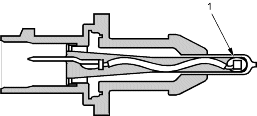
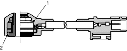
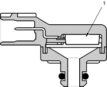
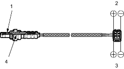
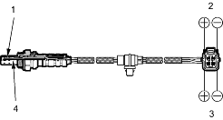

Intake Air Temperature (IAT) Sensor
The IAT sensor is a temperature dependent resistor (thermistor). The resistance of the thermistor decreases as the intake air temperature increases.

- THERMISTOR
Knock Sensor
The knock control system adjusts the ignition timing to minimise knock.

- WEIGHT
- PIEZO ELEMENT
Manifold Absolute Pressure (MAP) Sensor
The MAP sensor converts manifold absolute pressure into electrical signals to the ECM/PCM.

- SENSOR UNIT
Primary Heated Oxygen Sensor (Primary HO2S)
The primary HO2S detects the oxygen content in the exhaust gas and sends signals to the ECM/PCM which varies the duration of fuel injection accordingly. To stabilise its output, the sensor has an internal heater. The primary HO2S is installed in the exhaust manifold. By controlling the air fuel ratio with primary HO2S and secondary HO2S, the deterioration of the primary HO2S can be evaluated by its feedback period. When the feedback period exceeds a certain value during stable driving conditions, the sensor is considered deteriorated and the ECM/PCM sets a DTC.

- ZIRCONIA ELEMENT
- SENSOR TERMINALS
- HEATER TERMINALS
- HEATER
Secondary Heated Oxygen Sensor (Secondary HO2S)
The secondary HO2S detects the oxygen content in the exhaust gas downstream of the Three Way Catalytic Converter (TWC) and sends signals to the ECM/PCM which varies the duration of fuel injection accordingly. To stabilise its output, the sensor has an internal heater. The secondary HO2S is installed in the TWC.

- ZIRCONIA ELEMENT
- SENSOR TERMINALS
- HEATER TERMINALS
- HEATER
Starting Control
When the engine is started, the ECM/PCM provides a rich mixture by increasing injector duration.